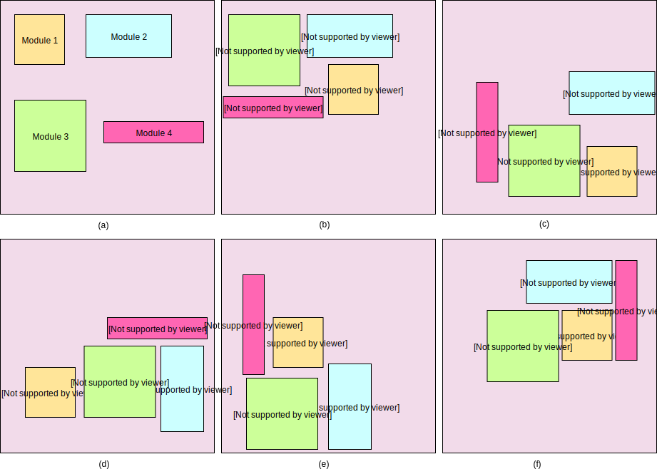
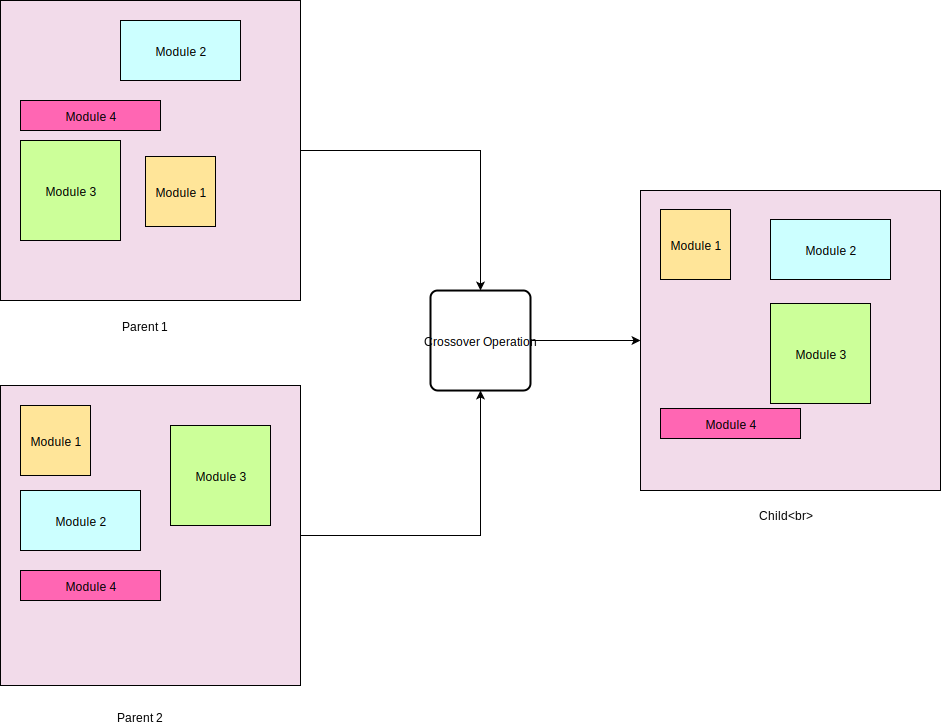
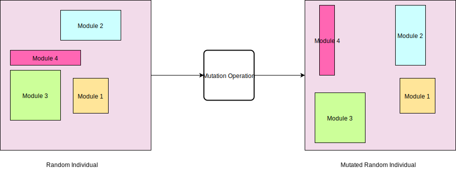
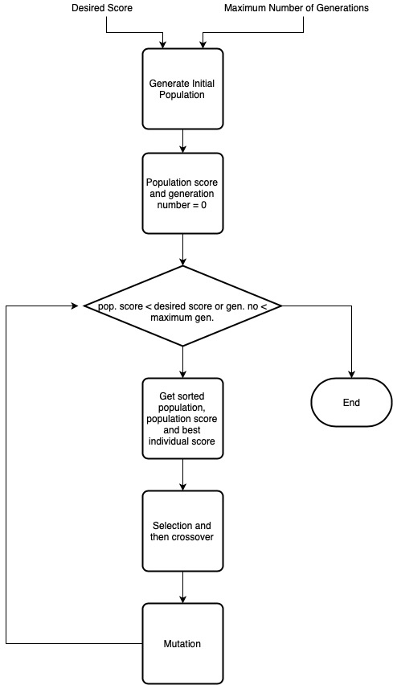
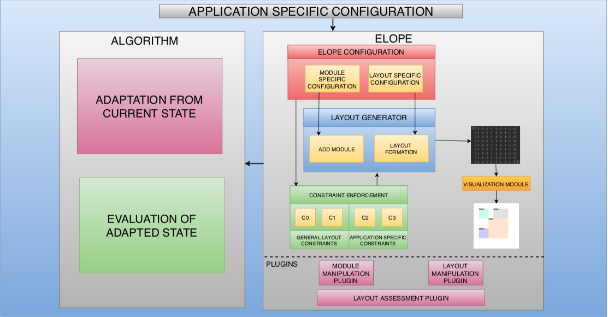
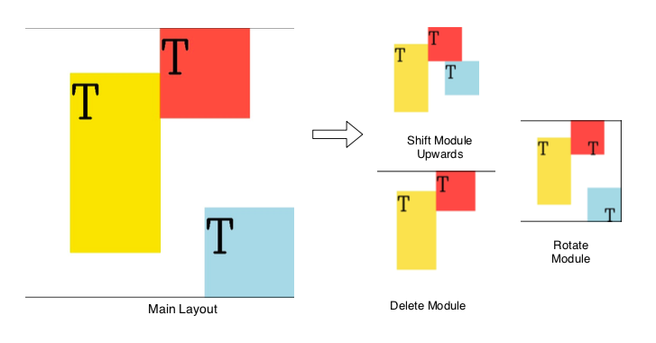
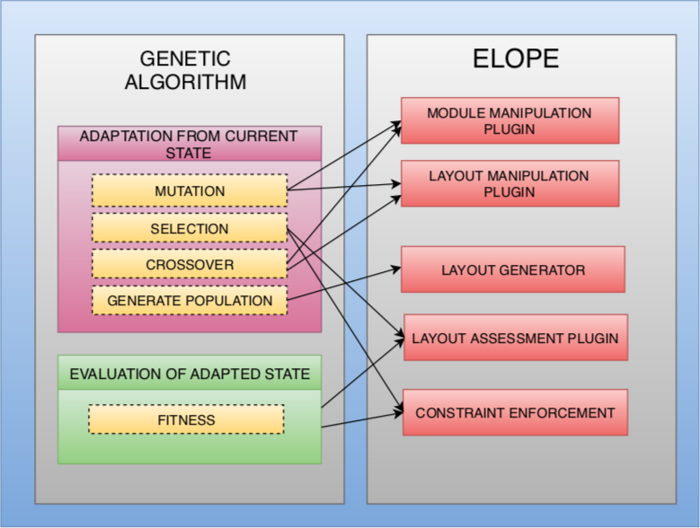
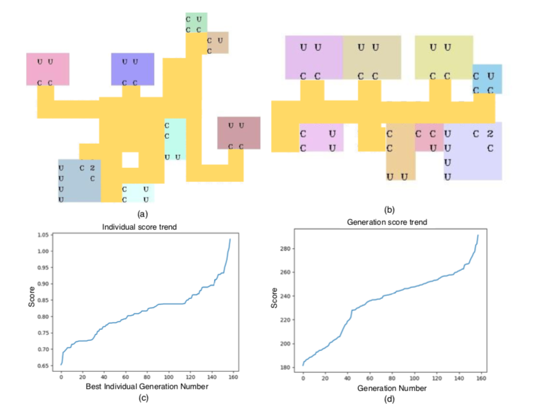

Siddhant Bansal
Meditab Software, Inc.
siddhant2697@gmail.com
This is web page dedicated to the work done by me at Meditab Software, Inc.
For any organization to make the maximum profit it is important to have an efficient and effective manufacturing unit. For such a unit it is necessary to give special attention to facility layout. Facility layout is defined as an effective arrangement of different manufacturing units to achieve desired production results. There are a few things that can be considered for facility layout like, total available space, time for manufacturing a single batch of product, user access points of the machine for convenient operations. An efficient layout is the one which ensures a steady and smooth flow of equipment, production material, and manpower at minimum expense.
Manually figuring out the best possible layout satisfying all the constraints can be a difficult task as there can be infinitely many ways of arranging a facility with n number of constraints. This is the reason we consider Genetic Algorithm to find the best layout for us with the given set of constraints.
Layout Optimisation Problem refers to the problem of determining positions of modules in a layout for optimizing multiple constraint objectives specific to the problem statement. The discussed problem statement can be divided into two subdivisions as continuous layout optimization problem and discrete layout optimization problem. Researchers like [1], [2], [3], [4] have contributed immensely for the continuous layout optimisation problem, whereas [5], [6], [7] made numerous efforts for a discrete layout optimisation problem. Apart from mentioned categorization, there are also additional possible ways of categorizing Layout optimization problem as an equal-area problem, unequal area problem [8], Quadratic Assignment Problem (QAP) and Quadratic Set Covering Problem (QSCP) [9].

Fig.1: Few of the many possible ways in which 4 modules can be arranged in a facility.
For solving the above-mentioned problem scenarios, a wide array of algorithms have been employed. Genetic algorithms were used by [9] for flexible manufacturing system optimisation, genetic search by [10] for unequal-area facility layout optimization, genetic programming by [11] for Geometry and sizing optimisation of the discrete structure. This problem statement has also been assessed by researchers from diverse applied engineering fields. [12] have explored the same for optimizing placement of components on the PCB using genetic algorithms. The above-mentioned methods use vectors as the representation of the modules (units to be arranged in a given space called environment). Whereas our approach uses 2D matrices as the representations of the modules and produces some good environment.
The work can be explored in two phases, first by learning about Genetic Algorithms in Section 2. Then by analyzing the environment created by us called ELOPE (Evolutionary Layout Optimization Playground and Evaluator) in Section 3.
The genetic algorithm is a type of evolutionary algorithm that tries to mimic the actual biological process in the hope of discovering good solutions which were first introduced by [13]. The genetic algorithm is analogous to Darwinian natural mutation and selection, it is a part of ‘randomized heuristics’ which does not depend on the prior knowledge of various features of the domain whereas it depends on the randomized choice of operators.
The genetic algorithm transforms a population of individual solutions repeatedly. At each iteration, the algorithm chooses some individuals randomly from the current population which acts at the parents to produce the offsprings for the coming generation. The process continues for some generations, and the population evolves toward a local or global optimal solution.
Three main steps are used in the algorithm to create the future generation from the current generation:
Let us learn about all the above steps one by one.
First of all the fitness score of the entire population is calculated. Fitness score indicates the value of a particular individual, in our case the more the fitness score of an environment is the better it is. The population is then sorted on the fitness score. Then we use any one of the following two techniques for the selection of the parents:
Crossover is used for exploring the sample space in the Genetic Algorithm, we implement 2 different crossover strategies, they are as follows:
For old population P, new population P′ is generated as P′ = C (P) where C is a crossover function.

Fig.2: Crossover operation between Parent 1 and Parent 2 results in Child (a new environment).
The mutation is used for exploiting the sample space in the Genetic Algorithm, we implement 3 different strategies in our plugin, they are as follows:

Fig.3: Mutation operation taking a random individual and transforming the modules using various operations like shift, tilt and rotate.
Here is the pseudo-code for implementing the Genetic Algorithm:
Input: desired fitness score, the maximum number of generations
Output: Parameter:
Fitness strategy
The algorithm can be visualised as shown in Fig.4.

Fig.4: Flow of the genetic algorithm.
Current ameliorations in Evolutionary Strategies have allowed us to achieve phenomenal accuracy invariants of optimization problems. However, for the layout optimization problem, there doesn’t exist a platform adept enough to challenge off-the-shelf algorithms to the fullest extent. For addressing the mentioned problem statement, we introduce Evolutionary Layout Optimization Playground and Evaluator (ELOPE), a platform for solving a large spectrum of layout optimization problems. ELOPE’s major contributions are its proposed 2D rectangular representation for the environment, multi-objective optimization, pre-defined plugins for evolutionary algorithms and visualization of the generated layouts.
ELOPE, is a platform for evaluating and comparing different evolutionary algorithms for solving
layout problems using evolutionary algorithms.
Major advantages of ELOPE are:

Fig.5: ELOPE’s architecture and interaction with the algorithm.
The key idea for ELOPE is to avail the community with a comprehensive platform for solving the layout optimisation problems. ELOPE is written in Python to avail the implemented operations for matrix manipulation and its matured range of libraries for applied programming. This choice also caters the developers to prototype the ideas relatively faster and help direct the efforts on the algorithm than the interfaces. ELOPE stands out as a bridge between the problem statement and the algorithm employed to solve it. Fig.5 illustrates that relationship via the user-defined data-flow originating from the problem statement at hand. The interactions among the sub-modules of ELOPE and the optimization strategy of choice are also represented.
ELOPE represents the multi-floor space as a set of 3D grid boxes, which behave as the fundamental cell. Each grid box can be represented as Gx,y,z where x, y, and z where x ∈ {1,...,X}, y ∈ {1,...,Y} and z ∈ {1,...,Z}. The X, Y, and Z are the inputs derived from the application-specific configuration which denote the width, length, and the number of floors respectively for the floor space. Each grid box acquires a token value (g) from the grid token set (G). Here g ∈ G where,
where,
−2 represents blocked or unusable space
−1 represents vacant or usable space
0 represents the connections between modules
M represents module ID (explained later in this section)
The physical components which are supposed to occupy the floor-space or in other words whose positions are to be optimized are addressed as module henceforth. The properties of the module (PM) for a single floor is represented as follows:
The information corresponding to the layout being optimised acts as an input for the ELOPE environment. This information is represented in a configuration file consisting of fields related to the physical floor-space, constraints, and specifications about the components to be placed optimally in the layout.
The ELOPE configuration file generates constraint enforcement which acts as an input for layout generator. Constraint enforcement can be categorized as general layout constraints and application layout constraints. Constraints are defined using the information from grid token set G. For example, general layout constraints include layouts containing non-overlapping modules, modules that should be represented within the boundary of layout whereas application-specific constraints include constraints such as user accessibility constraint, blockage constraint, and module adjacency constraint.
ELOPE’s plugins are divided into 3 major categories:
The layout that is internally represented as a Numpy array is not a good way when it comes to visualizing the layout. This is the reason ELOPE comes with a visualization module for converting all the information from the Numpy array to a form that can be easily understood and visualized. Fig.6 shows the layout generated using Visualization Module.

Fig.6: The internal representation of the layout is converted to the form which is convenient for visualization. Demonstration of how the main layout looks after applying shift, delete and rotate plugin is shown.

Fig.7: The use of ELOPE to develop the genetic algorithm is demonstrated. The mapping of different strategies of genetic algorithm is shown with the corresponding modules of ELOPE used.
All these plugins of the genetic algorithm are developed using ELOPE. As shown in Fig.7, generate population is build using ELOPE’s Layout Generator, crossover and mutation is build using module and layout manipulation plugin, whereas selection and fitness strategy is developed using constraint enforcement and layout assessment plugin. This demonstrates the purpose of ELOPE in developing different algorithms.
For getting an optimized industrial warehouse environment the algorithm was made to evolve until the desired score was achieved. In Fig.8, the tracks of the conveyor are represented between the modules. Clearly, in Fig.8 (a) the conveyor length is higher than as shown in Fig.8 (b) and also the area occupied by the modules and conveyor is reduced to a certain extent. Overall we get an optimized layout after evolving for 160 generations through the genetic algorithm.

Fig.8: (a) shows the initial layout where modules are placed randomly, (b) shows the optimized layout evolved after 160 generations, (c) represents the best layout score and (d) represents the overall generation score.
We have presented a way in which we can use ELOPE to apply the genetic algorithm for facility layout optimization. ELOPE can be elegantly used as a playground for developing, understanding and evaluating not just evolutionary algorithms but also Reinforcement Learning (RL) and other search optimization techniques. ELOPE in its future version aims to support various nuances of layout optimisation problems along with 3D visualisation modules.